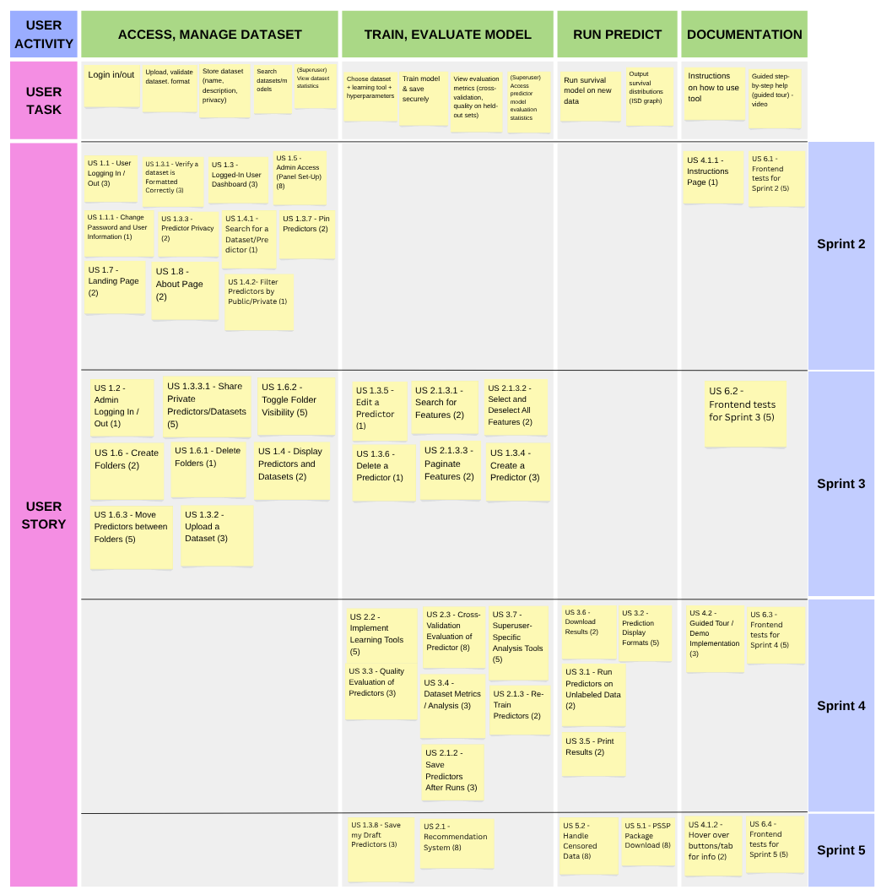

Project Management
Story Map

Project Plan
Meeting Minutes are here
Sprint 1
Due date: 28 Sept 2025
| Task | Description | Date Completed | Assignee(s) |
|---|---|---|---|
| 1 | Initial MkDocs Setup and Sections Drafted | Sept 19 | Yaatheshini |
| 2 | Project Requirements Document Update | Sept 22 | Selena, Yaatheshini |
| 3.1 | High-level Architecture Design | Sept 24 | Advi, Excel |
| 3.2 | UML Class Diagram | Sept 24 | Yaatheshini, Alex, Shahmeer |
| 3.3 | Sequence Diagram | Sept 24 | Yaatheshini, Advi |
| 3.4 | Wireframes | Sept 24 | Selena, Hoang |
| 3.5 | Storymap | Sept 27 | Hoang |
| 3.6 | Team Canvas | Sept 25 | Hoang, Advi, Selena, Yaatheshini, Alex, Shahmeer, Excel |
| 4 | Tech Stack | Sept 26 | Advi, Selena, Yaatheshini |
| 6 | User Issues Added on GitHub | Sept 26 | Yaatheshini, Selena |
| 7 | Acceptance Tests added on wesbite | Sept 25 | Alex |
| 8 | Story Points, tags and assignees added | Sept 27 | Advi, Selena |
| 9 | Project Plan | Sept 27 | Selena |
| 10 | Teamwork Document | Sept 24 | Yaatheshini, Selena |
| 11 | Belbin Roles | Sept 24 | Yaatheshini |
-
First Draft of All Deliverables Due: Thursday, Sept 25
-
Actually Finished: Saturday, Sept 27
-
Confirm Submission: Sunday, Sept 28
Sprint 2
Due date: 12 Oct 2025
List of user stories to be completed
| User Story Number | Description | Story Points | Assignee(s) |
|---|---|---|---|
| US 1.1 | User Logging In / Out | 3 | Advi, Selena, Yaatheshini |
| US 1.1.1 | Change Password and User Information | 3 | Advi, Selena, Yaatheshini |
| US 1.3 | Logged-In User Dashboard | 3 | Advi, Selena |
| US 1.3.1 | Verify a Dataset is Formatted Correctly | 3 | Alex, Hoang |
| US 1.3.3 | Predictor Privacy | 2 | Yaatheshini, Selena |
| US 1.3.7 | Pin Predictors | 3 | Yaatheshini, Selena |
| US 1.4.1 | Search for a Dataset / Predictor | 1 | Selena |
| US 1.4.2 | Filter Predictors By Public / Private Access | 1 | Selena |
| US 1.5 | Admin Access (Panel Set-Up) | 3 | Yaatheshini |
| US 1.7 | Landing Page | 2 | Shahmeer |
| US 1.8 | About Page | 2 | Shahmeer |
| US 4.1 | Instructions Page | 1 | Hoang |
| US 6.1 | Frontend Tests for Sprint 2 | 5 | Yaatheshini |
Estimated sprint velocity: 32
-
First Draft of All Deliverables Due: Thursday, Oct 9
-
Actually Finished: Sunday, Oct 13
-
Confirm Submission: Sunday, Oct 13
Sprint 3
Due date: 26 Oct 2025
List of user stories to be completed
| User Story Number | Description | Story Points | Assignee(s) |
|---|---|---|---|
| US 1.2 | Admin Logging In / Out | 1 | Advi, Yaatheshini |
| US 1.3.2 | Upload a Dataset | 3 | Alex, Hoang, Advi, Selena |
| US 1.3.4 | Create a Predictor | 3 | Yaatheshini, Excel, Selena |
| US 1.3.5 | Edit a Predictor | 1 | Excel, Advi |
| US 1.3.6 | Delete a Predictor | 1 | Advi |
| US 1.3.3.1 | Share Private Predictors | 5 | Yaatheshini |
| US 1.4 | Display Predictors & Datasets | 2 | Advi, Selena, Yaatheshini |
| US 1.6 | Create Folders | 2 | Hoang |
| US 1.6.1 | Delete Folders | 1 | Hoang |
| US 1.6.2 | Toggle Folder Visibility | 5 | Hoang |
| US 1.6.3 | Move Predictors Between Folders | 5 | Hoang |
| US 2.1.3.1 | Search for Features | 2 | Alex |
| US 2.1.3.2 | Select and Deselect All Features | 2 | Alex |
| US 2.1.3.3 | Paginate Features | 2 | Selena |
| US 6.2 | Frontend tests for Sprint 3 | 5 | Yaatheshini |
Estimated sprint velocity: 40
-
Initial Check-In - October 19th
-
Actually Finished: Sunday, Oct 26
-
Confirm Submission: Sunday, Oct 26
Sprint 4
Due date: 9 Nov 2025
List of user stories to be completed
| User Story Number | Description | Story Points | Assignee(s) |
|---|---|---|---|
| US 2.1.2 | Save Predictors After Runs | 3 | Selena |
| US 2.1.3 | Re-Train Predictors | 2 | Excel, Alex, Selena |
| US 2.2 | Implement Learning Tools | 5 | Excel |
| US 2.3 | Cross-Validation Evaluation of Predictor | 8 | Alex, Excel |
| US 3.1 | Run Predictors on Unlabeled Data | 2 | Alex, Advi |
| US 3.2 | Prediction Display Formats | 5 | Hoang |
| US 3.3 | Quality Evaluation of Predictors | 3 | Hoang |
| US 3.4 | Dataset Metrics / Analysis | 3 | Hoang |
| US 3.5 | Print Results | 2 | Shahmeer |
| US 3.6 | Download Results | 2 | Shahmeer |
| US 3.7 | Superuser-Specific Analysis Tools | 5 | Advi |
| US 4.2 | Guided Tour / Demo Implementation | 3 | Yaatheshini, Alex |
| US 6.3 | Frontend tests for Sprint 4 | 5 | Yaatheshini |
Estimated sprint velocity: 48
-
Initial Check-In - November 2nd
-
Due (for Review) - (tentative) November 6th
-
Due - (tentative) November 8th
Sprint 5
Due date: 30 Nov 2025
List of user stories to be completed
| User Story Number | Description | Story Points | Assignee(s) |
|---|---|---|---|
| US 1.3.8 | Save My Draft Predictors | 3 | TBD |
| US 2.1 | Recommendation System | 8 | TBD |
| US 4.1.1 | Hover Over Buttons / Tabs for Info | 2 | TBD |
| US 5.1 | PSSP Package Download | 8 | TBD |
| US 5.2 | Handle Censored Data | 8 | TBD |
| US 6.4 | Frontend tests for Sprint 5 | 5 | TBD |
Estimated sprint velocity: 26
-
Initial Check-In - November 23th
-
Due (for Review) - (tentative) November 27th
-
Due - (tentative) November 29th
Interfaces (APIs and Modules)
1. Overview
The backend is divided into four main modules: accounts, authapp, dataset, and predictors.
Each module is responsible for a distinct part of the system and communicates with others through well-defined interfaces, primarily using REST API endpoints and shared database models.
This modular structure keeps the codebase organized and makes it easier to maintain, test, and extend.
Accounts Module
-
Purpose:
Handles user profile data such as name, email, and organization. It provides endpoints for retrieving and updating user information. -
Interface Type:
DRF serializers and viewsets that expose user-related CRUD operations. -
Interactions:
- Works with AuthApp to validate user identity through JWT tokens.
- Provides user information and ownership data to the Dataset and Predictors modules.
- Allows the frontend to access and display authenticated user profiles.
AuthApp Module
-
Purpose:
Manages all authentication and authorization processes, including user registration, login, logout, and password resets. -
Interface Type:
DRF APIViews that provide authentication endpoints and issue JWT tokens for secure user sessions. -
Interactions:
- Provides authentication tokens used by Accounts, Dataset, and Predictors to authorize requests.
- Updates and verifies user credentials stored in the shared
Usermodel used by Accounts. - Acts as the main entry point for verifying user identity across all other modules.
Dataset Module
-
Purpose:
Manages user-uploaded datasets, including creation, retrieval, and permission control for sharing with other users. -
Interface Type:
DRF ViewSets and serializers that define dataset CRUD operations and permission endpoints. -
Interactions:
- Uses authentication from AuthApp to verify user access before allowing dataset operations.
- Associates each dataset with a user record from Accounts to manage ownership.
- Provides dataset resources to the Predictors module for use in model training and prediction.
Predictors Module
-
Purpose:
Handles machine learning predictors, including model configuration, execution, and storage of results. -
Interface Type:
DRF ViewSets and serializers that define endpoints for creating and managing predictors. -
Interactions:
- Requires authentication from AuthApp to ensure only authorized users can create or run predictors.
- Uses ownership and user data from Accounts to associate predictors with specific users.
- Depends on Dataset for input data during prediction and training tasks.
2. Data Flow Summary
- Users authenticate through AuthApp, which issues JWT tokens.
- The Accounts module uses the token to retrieve or update user information.
- The Dataset module allows authenticated users to upload, manage, and share datasets.
- The Predictors module accesses datasets and performs predictions based on the authenticated user’s data.
- All data exchanged between modules follows standardized REST API contracts using JSON.
Requirement Traceability Matrix
Accounts App
| User Story ID | Requirement Description | Test Case(s) | Test File | Coverage Status |
|---|---|---|---|---|
| US 1.1.1 | User can change their password using the correct old password and matching confirmation. | test_change_password_success |
test_accounts.py |
Covered |
| US 1.1.1 | Changing password should fail if old password is incorrect. | test_change_password_incorrect_old |
test_accounts.py |
Covered |
| US 1.1.1 | Changing password should fail if new and confirm passwords do not match. | test_change_password_mismatch |
test_accounts.py |
Covered |
| US 1.1.1 | Unauthenticated users cannot change password. | test_unauthenticated_cannot_change_password |
test_accounts.py |
Covered |
| US 1.3 | Authenticated users can view their own profile information at /me/. |
test_get_profile |
test_accounts.py |
Covered |
| US 1.3 | Authenticated users can update their profile (first and last name) through /me/. |
test_update_profile |
test_accounts.py |
Covered |
| US 1.3 | Unauthenticated users cannot access the /me/ endpoint. |
test_unauthenticated_cannot_access_me |
test_accounts.py |
Covered |
AuthApp
| User Story ID | Requirement Description | Test Case(s) | Test File | Coverage Status |
|---|---|---|---|---|
| US 1.1 | User can log in with valid credentials and receive access/refresh tokens. | test_login_user |
test_auth.py |
Covered |
| US 1.1 | User can log out and invalidate refresh tokens. | test_logout_user |
test_auth.py |
Covered |
| US 1.1 | User can refresh access tokens using a valid refresh token. | test_refresh_token |
test_auth.py |
Covered |
| US 1.1 | User can register a new account with valid username, email, and password. | test_register_user |
test_auth.py |
Covered |
| US 1.1.1 | User can initiate a forgot password request and receive a reset email. | test_forgot_password_sends_email |
test_auth.py |
Covered |
| US 1.1.1 | User can reset password using a valid token and new password. | test_reset_password_success |
test_auth.py |
Covered |
| US 1.1.1 | Admin can send password reset email to a valid user. | test_password_reset_email_sent |
test_auth.py |
Covered |
| US 1.1.1 | Admin password reset request with invalid email still returns a 200 OK. | test_password_reset_invalid_email |
test_auth.py |
Covered |
| US 1.1.1 | Admin can confirm password reset using UID and token. | test_password_reset_confirm |
test_auth.py |
Covered |
Datasets App
| User Story ID | Requirement Description | Test Case(s) | Test File | Coverage Status |
|---|---|---|---|---|
| US 1.3.1 | User can upload/create a dataset. | test_create_dataset |
test_datasets.py |
Covered |
| US 1.3.1 | Dataset creation fails if dataset_name is missing. |
test_create_dataset_missing_name |
test_datasets.py |
Covered |
| US 1.3.1 | Owner can update their dataset. | test_update_dataset |
test_datasets.py |
Covered |
| US 1.3.1 | Owner can delete their dataset. | test_delete_dataset |
test_datasets.py |
Covered |
| US 1.3.1 | Non-owner cannot update a dataset. | test_non_owner_cannot_update |
test_datasets.py |
Covered |
| US 1.3.1 | Non-owner cannot delete a dataset. | test_non_owner_cannot_delete |
test_datasets.py |
Covered |
| US 1.3.1 | Non-owner can view a dataset if granted permission. | test_non_owner_can_view_if_granted |
test_datasets.py |
Covered |
| US 1.3.1 | Non-owner cannot view a dataset if not granted permission. | test_non_owner_cannot_view_if_not_granted |
test_datasets.py |
Covered |
Predictors App
| User Story ID | Requirement Description | Test Case(s) | Test File | Coverage Status |
|---|---|---|---|---|
| US 1.3.4 | User can create a predictor. | test_create_predictor |
test_predictors.py |
Covered |
| US 1.3.5 | User can edit a predictor. | test_edit_predictor |
test_predictors.py |
Covered |
| US 1.3.6 | User can delete a predictor. | test_delete_predictor |
test_predictors.py |
Covered |
| US 1.3.3 | Predictor privacy – only owners and permitted users can view a predictor. | test_non_owner_can_view_if_granted |
test_predictors.py |
Covered |
| US 1.3.3 | Non-owner cannot view a predictor if access is restricted. | test_non_owner_cannot_view_if_restricted |
test_predictors.py |
Covered |
| US 1.3.5 | Non-owner cannot edit a predictor. | test_non_owner_cannot_update |
test_predictors.py |
Covered |
| US 1.3.6 | Non-owner cannot delete a predictor. | test_non_owner_cannot_delete |
test_predictors.py |
Covered |
Selenium Testing
| User Story ID | Requirement Description | Test Case(s) | Test File | Coverage Status |
|---|---|---|---|---|
| US 1.1 | User Logging In / Out & Forgot Password | test_full_password_reset_flow |
test_user_login_logout_reset.py |
Covered |
| US 1.2 | Admin Logging In / Out & Forgot Password | test_admin_login_logout_reset |
test_admin_login_logout_reset.py |
Covered |
| US 1.5 | Admin Access (Panel Set-Up) | test_admin_login_logout_reset |
test_admin_login_logout_reset.py |
Covered |
| US 1.3 | Logged-In User Dashboard | test_full_password_reset_flow |
test_user_login_logout_reset.py |
Covered |
| US 1.7 | User Landing Page | test_full_password_reset_flow |
test_user_login_logout_reset.py |
Covered |
| US 1.8 | User About Page | test_full_password_reset_flow |
test_user_login_logout_reset.py |
Covered |
| US 4.1 | User Instructions Page | test_full_password_reset_flow |
test_user_login_logout_reset.py |
Covered |
| US 1.3.7 | Pin Predictors | test_full_password_reset_flow |
test_user_login_logout_reset.py |
Covered |